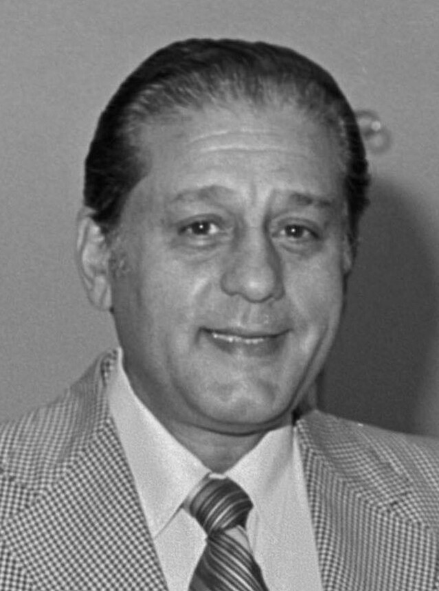

Un puente de vena para el corazón: Favaloro logra saltar la arteria tapada y salvar el músculo
En la Clínica Cleveland, el cirujano platense René Favaloro realizó con éxito el primer bypass aortocoronario planificado con una vena de la propia pierna del enfermo. El hijo de un carpintero que fue médico rural doce años acaba de abrir un camino nuevo.

En un quirófano de la Clínica Cleveland, uno de los grandes centros del corazón en el mundo, el cirujano argentino René Favaloro acaba de hacer con método y a conciencia lo que hasta hoy apenas se había intentado a la desesperada: tomó un segmento de la vena safena de la pierna del propio enfermo, lo cosió a la aorta por un extremo y a la arteria coronaria más allá de la obstrucción por el otro, y creó así un desvío —un puente— por el que la sangre vuelve a llegar al músculo cardíaco que la placa tenía condenado a la asfixia. La operación salió bien; el corazón, irrigado de nuevo, latió agradecido.
El mal que combate es el que más muertes causa hoy en el mundo próspero. Con los años, las arterias que alimentan al corazón se van tapando de grasa y de cal, la sangre no pasa, y el músculo avisa primero con el dolor de pecho de los esfuerzos y termina, un mal día, muriéndose a pedazos en el infarto. Hasta ahora la medicina asistía a ese proceso casi con las manos atadas: reposo, calmantes, resignación. Se habían ensayado cirugías indirectas, ingeniosas y de resultados pobres, para arrimarle sangre al corazón por caminos laterales; lo que faltaba era animarse a lo evidente y difícil a la vez, puentear la obstrucción por su propio cauce.
El autor de la proeza tiene una biografía que parece inventada. Nacido en La Plata, hijo de un carpintero, René Favaloro se recibió de médico y, en vez de buscar fama en la ciudad, se fue por doce años a un pueblo perdido de la pampa, Jacinto Aráuz, donde operaba en un quirófano que él mismo montó y formaba enfermeras entre las vecinas. Pasados los cuarenta se atrevió a empezar de nuevo: viajó a Cleveland casi sin inglés, aceptó ser el último de la fila y se pasó los días en la sala de angiografías, mirando miles de placas de arterias enfermas hasta conocer el mapa del corazón mejor que nadie. De esa paciencia de médico rural salió la idea de hoy.
Quienes trabajan con él lo describen como un hombre grande, de manos enormes y voz de trueno, incapaz de disimular el enojo cuando algo se hace mal y de una obstinación de relojero cuando algo puede hacerse mejor. Cuentan que repasó la técnica decenas de veces en el cadáver y en el laboratorio antes de llevarla al enfermo vivo, porque no concebía experimentar con el miedo ajeno. Habla de volver algún día a su país a fundar allí un centro donde se opere y se enseñe con el nivel de los mejores del mundo, sin cobrarle la ciencia a nadie por haber nacido lejos. Sus colegas norteamericanos, que empiezan a copiar el procedimiento, ya no lo llaman «el argentino», sino por su apellido.
Es temprano para medir el alcance de lo hecho hoy en Cleveland, pero si el puente de vena resiste el paso de los años en miles de pechos, la cirugía del corazón habrá cambiado de era, y con ella la expectativa de vida de medio mundo. Hay algo que este diario no quiere dejar pasar: hace apenas seis años contábamos que el primer hombre en salir al espacio era el hijo de un carpintero de aldea, y hoy el corazón humano recibe su puente de manos de otro hijo de carpintero, criado entre el serrucho y la pampa. Se ve que las grandes obras del siglo no siempre bajan de los palacios: a veces suben desde los talleres.